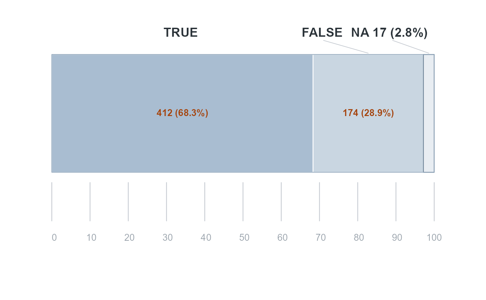

Draw a boolean variable as one divided bar
boolebar.RdDraws a single full-width horizontal bar split into one part per category, with the count and share inside each part, the category labels above, and a tenths scale beneath. Unlike [booleplot()], which gives each category its own bar, the parts here share one length, so they read as shares of the whole.
Usage
boolebar(
x,
fills = .boolebar_fills,
value_col = "#A5450F",
bar_border = "#8FA5BA",
na_border = "#6E8498",
tick_col = "#C3C8CF",
axis_col = "#9AA3AC",
label_col = "#2B3339",
family = .report_family(),
inset = 0.1,
cex.label = 1.15,
cex.value = 0.85,
cex.axis = 0.85,
mar = c(1.9, 0.3, 1.4, 0.3)
)Arguments
- x
A named numeric vector of counts (names are the category labels), already in display order — see [paste_boolebar()], which orders them.
- fills
Fill colours, applied left to right. Defaults to three light tints of the report's slate, each a step paler than the last.
- value_col
Colour of the counts printed on the bar: the report's accent orange, which carries against every tint and so can be set smaller than the labels above it.
- bar_border
Outline around the whole bar. The tints are pale enough that without it the bar has no edge against the page.
- na_border
Outline for a missing-value part, the palest of the three.
- tick_col, axis_col
Colours for the tenth ticks and their numbers.
- label_col
Colour of the category labels above the bar.
- family
Font family for every label on the plot. Defaults to the first of the report's own body stack that is installed, so the chart text matches the surrounding page; falls back to the device default.
- inset
Fraction of the figure width left empty at each side, so the bar does not run edge to edge. Defaults to `0.10`.
- cex.label, cex.value, cex.axis
Text sizes for the category labels, the in-bar counts, and the scale numbers.
- mar
Plot margins, in lines. The defaults leave room for the labels above and the scale below and nothing else — the bar itself runs the full width of the figure.
Details
A part too narrow for `12 (2.8 and one too narrow even for that is left unlabelled rather than drawn with text spilling over its neighbours. The same test governs the labels above the bar.
Examples
boolebar(c(`TRUE` = 412, `FALSE` = 174, `NA` = 17))
